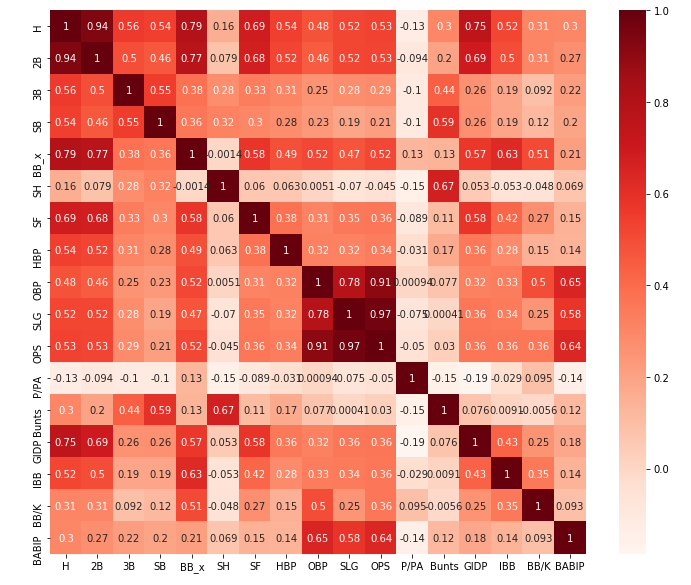
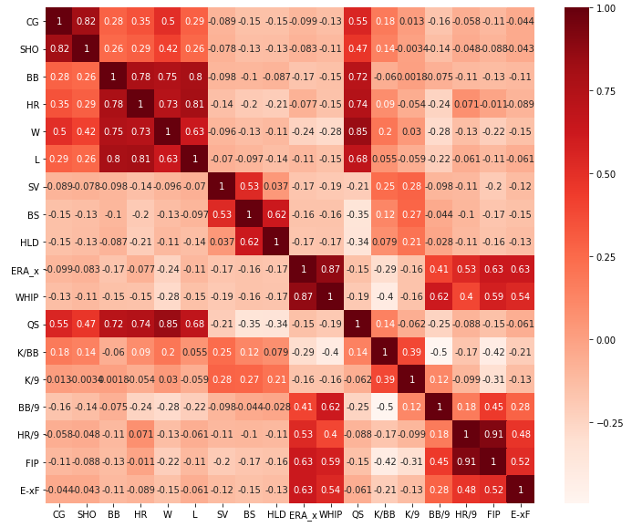
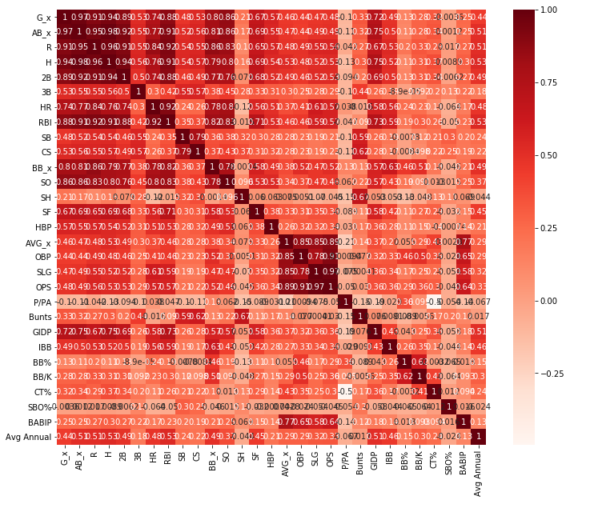
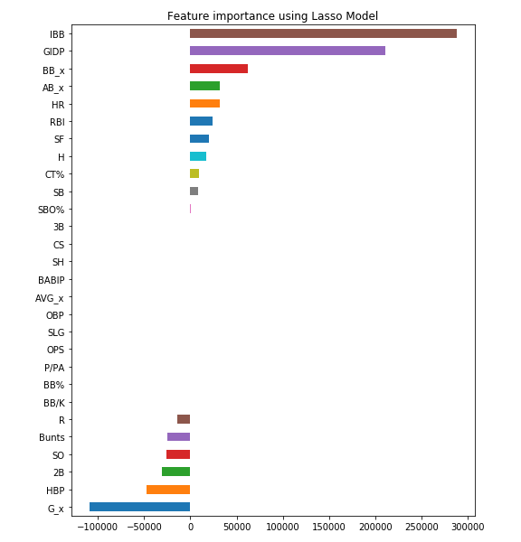
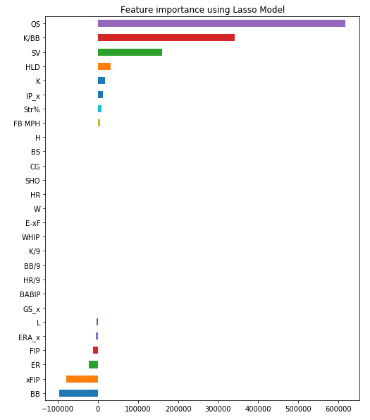
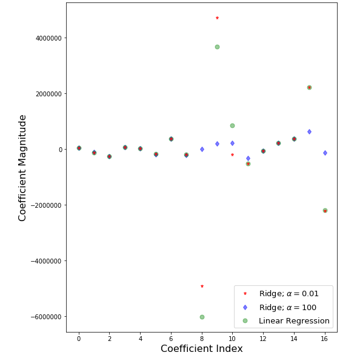
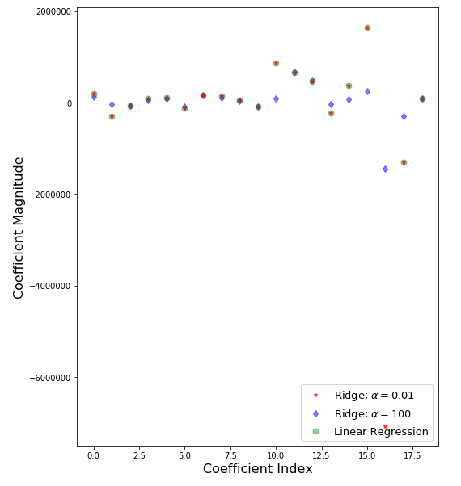

More MLB: Our 2019-20 MLB predictions - Every team’s Elo history.
The main data sources fr=or our moel came from Roto Wire. We pulled both the advanced and basic stats for every player in the MLB for the last six years. We needed this large dataset to train our model. We still used the WAR leaders from the previous part of our project to predict and display our data.
The biggiest issue we had with our data was that the Rookie players did not have consistant salaries. Rookie contracts are set by the MLB and are not able to be negtiated at a fair market value unless the teams are willing to extend the players. For our model we ended up excluding the majority of payers on Rookie Contracts because they would skew the projections negatively.
We knew that we had a regression problem so we started with the basic linear regression algorith for both the pitching and the batting dataset.
Since we knew that the WAR value was a combination of multiple other statistics we knew that it was probably inappropriate to include it in our evalution as it would correlate too strongly with other attributes and skew the results.
Our first step after loading the data was to check for correlations. We knew that in regression models, features that were highly correltated would often lead to inaccurate results. We built and charted a correlation for each dataset to visualize each dataset to quickly check for correlations that could be filterd out. The results are below.
 Once we had an idea of features that correlated to each other we ran the standard linear regression model to calculate feature importance and correlation coefficiants. The results for both are below
Now that we had a baseline for the linear regression and which features were most important we decided to implement the Lasso Regression model to try and impove accuracy by cutting down on the number of features that were included in the model. After the Lasso model we had paired out features down to include only 11 of the initial 19.
 Although the accuracy had improved we implemented the Ridge Regression model at different alpha values to try and further increase our accuracy. The alpha values we decided to use were .1 and .001. After running the model we found that using the high alpha value improved our accuracy above the other models on both datasets so we decided to move forward with those models.
 